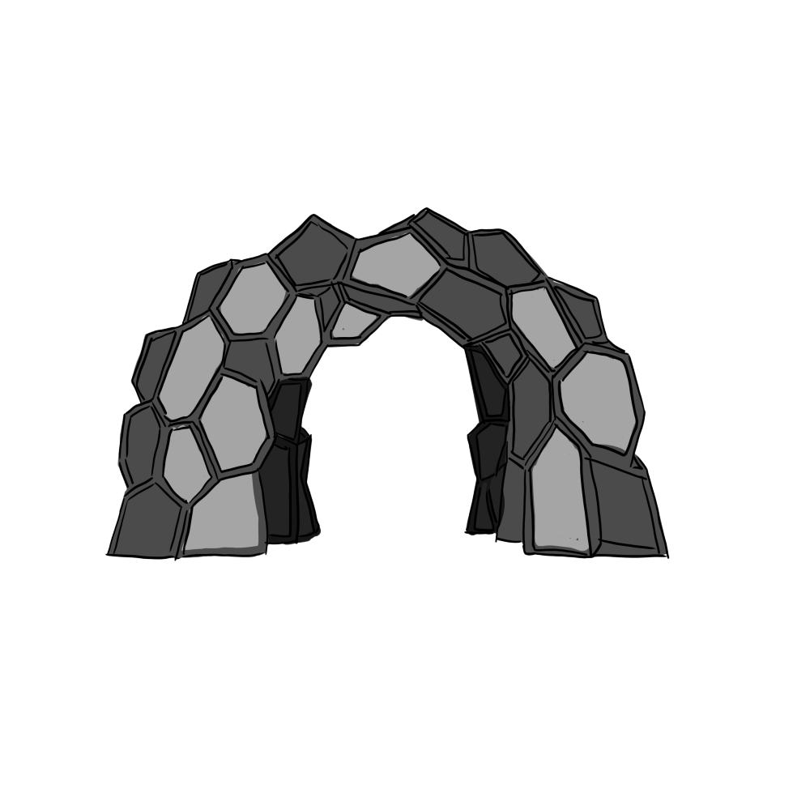
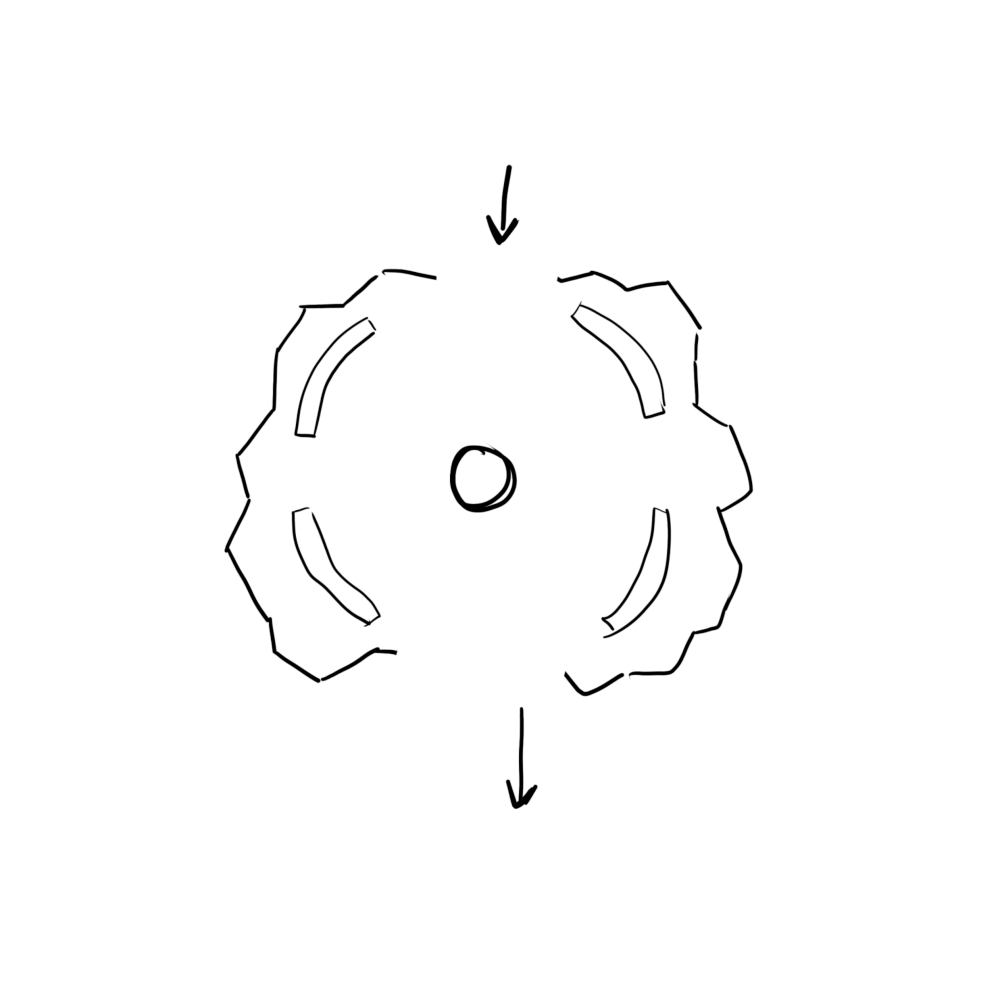

Desarrollo
Formal
Semanas 12 a 15
Semana 12 — Primer acercamiento formal
Partimos de una propuesta sencilla y dinámica, inspirada en el diagrama de Voronoi, explorando formas orgánicas e irregulares que se alejaran de las geometrías convencionales. Sin embargo, esta primera aproximación todavía reflejaba nuestras limitaciones conceptuales y el conocimiento inicial sobre el desarrollo estructural del proyecto.


Esquema básico de la semana 12.
Primera aproximación formal: dos bocetos de formas orgánicas e irregulares derivadas del diagrama de Voronoi. Refleja el conocimiento conceptual y estructural que teníamos al comenzar y es el punto de partida de las exploraciones siguientes.
Semana 13 — Exploración y evolución formal

Después del análisis de referentes y la investigación de estructuras plegables, desplegables e inflables, comenzamos a desarrollar propuestas más elaboradas, explorando nuevas posibilidades de configuración, volumen y transformación espacial.

Paralelamente, exploramos representaciones formales inspiradas en artefactos del Diseño Digital, como el mouse, el lápiz digital y la tableta gráfica, buscando integrar elementos reconocibles de la disciplina dentro de una propuesta arquitectónica con mayor identidad conceptual.

Propuesta de la estación de modelado 3D, identificada con el número 03 y el lema «Dale forma a tu imaginación». Un visitante trabaja sobre una pantalla interactiva en un modelo tridimensional mientras otra persona orienta la actividad, y junto a ellos se ubica una impresora 3D que permite materializar los diseños. Plantea el acercamiento a la creación y la fabricación digital.

Propuesta de la estación de diseño de contenidos digitales, identificada con el número 02. Un visitante interactúa con una pantalla táctil que reúne herramientas de composición de imagen y texto, frente a una superficie de proyección y con asientos alrededor. Propone una experiencia para explorar la creatividad y la resolución de problemas mediante recursos digitales.
Semana 14 — Propuesta final

Esta imagen representa la consolidación de la idea espacial y de la organización general de la experiencia. A partir de los planteamientos desarrollados en las semanas anteriores, el boceto define la forma de mouse de la instalación y el acceso por su costado, y fija la base sobre la cual se construyó el recorrido final.

Muestra el recorrido completo, con la distribución espacial y la secuencia de las estaciones que conforman la experiencia. El visitante entra por el acceso y avanza de un espacio al siguiente: cada estación se ubica de modo que lo conduce de manera natural hacia la próxima, sin interrupciones, hasta completar el circuito dentro de la instalación.

El recorrido se vive como una experiencia continua en la que cada espacio conduce al siguiente y permite descubrir un campo de acción distinto del diseño.Entrada y escalera de códigos QR. El recorrido comienza en un espacio de acceso con una escalera de códigos QR. Estos permiten consultar información sobre los campos de acción de la carrera y sus posibilidades profesionales, y ofrecen acceso directo a la plataforma de la universidad, donde los interesados pueden continuar con su inscripción.Estación de contenidos digitales. Luego los visitantes llegan a un espacio interactivo donde ponen a prueba su diseño, creatividad, pensamiento crítico y resolución de problemas mediante el desarrollo de contenidos digitales.Estación de modelado 3D. En esta etapa se acercan a herramientas de modelado y renderizado tridimensional, como Blender, y comprenden cómo estos procesos se materializan con la impresión 3D, con la posibilidad de obtener un elemento físico producido en una impresora 3D.Espacio de elaboración de videojuegos. Finalmente, el recorrido conduce a un espacio dedicado a la creación de videojuegos, donde los visitantes se aproximan a esta área y conocen sus posibilidades creativas e interactivas.
Semana 15 — Propuesta final de la instalación

Desliza el control horizontal para pasar del boceto original a la propuesta final a color. La vista frontal muestra la composición general de la instalación: un volumen continuo y curvo con forma de mouse, con la rueda de desplazamiento en la parte superior, los botones laterales iluminados en violeta y, hacia un extremo, el arco de acceso con la pantalla que lleva el nombre NEXUS. El contraste con el boceto permite ver cómo el trazo inicial se transformó en una pieza con volumen, materialidad, luz e identidad visual.

La perspectiva posterior deja ver el acceso abierto, con su interior iluminado y la pantalla NEXUS al fondo, junto con la rueda superior y los botones laterales que se mantienen como elementos de la estructura. Esta cara se relaciona con la vista frontal por la continuidad de la forma, los acabados y el color, y muestra cómo se entra a la instalación.

Representación ilustrada del resultado integral del diseño, ubicado en un espacio abierto frente a un grupo de visitantes. Permite apreciar su escala y su presencia en el entorno, y reúne la identidad visual (forma de mouse, tonos oscuros con acentos violeta y el nombre NEXUS), la distribución del acceso y la relación entre sus componentes como una sola pieza.
Diseño de itinerancia, montaje y desmontaje
La instalación fue concebida para viajar. Su propósito es llegar a diferentes espacios educativos para acercar la carrera de Diseño Digital a los estudiantes de grado 11, por lo que el diseño no podía pensarse únicamente como un objeto para ser observado, sino también como un sistema que pudiera trasladarse, instalarse y guardarse con facilidad.
Esta condición se resuelve a partir de dos estados: una configuración plegada, compacta y pensada para el transporte, y una configuración desplegada, en la que la propuesta adopta su forma completa y se habilita el recorrido interior. La relación entre ambos estados permite adaptar la instalación a distintos lugares y simplificar tanto su instalación como su almacenamiento.
Etapas del recorrido interior
 Imagen pendientePRIMERA ETAPA.png
Imagen pendientePRIMERA ETAPA.pngEtapa 1 de 4
Primera etapa del recorrido: aproximación e ingreso.
En esta primera etapa, los visitantes se aproximan al espacio de la instalación y encuentran un punto de acceso que introduce la experiencia. Se identifica un recurso gráfico interactivo mediante un código QR, que funciona como elemento de orientación y acercamiento inicial al contenido. Esta etapa permite iniciar el recorrido y reconocer la dinámica de participación dentro de la propuesta.
 Imagen pendienteSEGUNDA ETAPA.png
Imagen pendienteSEGUNDA ETAPA.pngEtapa 2 de 4
Segunda etapa del recorrido: exploración de contenidos digitales.
En esta etapa, el visitante se aproxima a una superficie de interacción destinada a la exploración de contenidos digitales. La disposición del espacio permite observar y manipular recursos visuales mediante dispositivos tecnológicos, generando un acercamiento a las herramientas y posibilidades de creación que hacen parte del Diseño Digital.
 Imagen pendienteTERCERA ETAPA.png
Imagen pendienteTERCERA ETAPA.pngEtapa 3 de 4
Tercera etapa del recorrido: exploración de modelado 3D y contenidos.
Esta etapa presenta diferentes posibilidades de exploración relacionadas con la creación digital. Se identifican espacios destinados al modelado tridimensional y a la consulta de contenidos, permitiendo que los visitantes reconozcan distintas áreas de aplicación del Diseño Digital. La organización espacial propone una experiencia de observación e interacción con los recursos expuestos.
 Imagen pendienteCUARTA ETAPA.png
Imagen pendienteCUARTA ETAPA.pngEtapa 4 de 4
Cuarta etapa del recorrido: experiencia de videojuegos.
En la última etapa se plantea un espacio de interacción enfocado en los videojuegos. La instalación incorpora una superficie de visualización y un área destinada a la participación de los visitantes, permitiendo experimentar otra de las posibilidades del Diseño Digital. Esta etapa funciona como cierre del recorrido y reúne una experiencia de carácter participativo.
Secuencia de preparación de la instalación: desde el despliegue de la estructura plegada hasta la adecuación de los equipos del interior.
Armado y montaje
 Imagen pendienteMOMENTO 1.png
Imagen pendienteMOMENTO 1.pngMomento 1 de 6
Primera etapa — Armado.
Se inicia el proceso de armado de la instalación mediante la preparación y organización de sus componentes. En este momento se observa la manipulación de la estructura plegada y la disposición de los elementos necesarios para comenzar su despliegue. Esta etapa corresponde a la preparación inicial de la instalación antes de su configuración espacial.
 Imagen pendienteMOMENTO 2.png
Imagen pendienteMOMENTO 2.pngMomento 2 de 6
Segunda etapa — Armado.
Una vez preparada la estructura, se continúa con el despliegue y la conformación del volumen principal de la instalación. En este momento se presenta la forma exterior del mouse y se reconoce cómo los componentes comienzan a adquirir su configuración definitiva. Esta etapa permite visualizar el resultado del proceso inicial de armado.
 Imagen pendienteMOMENTO 3.jpeg
Imagen pendienteMOMENTO 3.jpegMomento 3 de 6
Tercera etapa — Montaje.
Se inicia la adecuación del espacio interior mediante la instalación y organización de los equipos y recursos tecnológicos correspondientes a las actividades. En la imagen se observa la preparación de una estación de videojuegos, con la distribución de sus dispositivos y elementos de interacción. Este momento permite reconocer el proceso de acondicionamiento de las experiencias dentro de la instalación.
 Imagen pendienteMOMENTO 4.jpeg
Imagen pendienteMOMENTO 4.jpegMomento 4 de 6
Cuarta etapa — Montaje.
Se continúa con el montaje de los componentes tecnológicos y audiovisuales que complementan la experiencia interior. En este momento se observa la instalación de equipos de proyección y registro, junto con la adecuación de los elementos necesarios para su funcionamiento. Esta etapa permite completar la preparación técnica de los espacios de interacción.
Una vez finalizada la experiencia, la estructura se recoge siguiendo el proceso inverso al montaje.

Momento 5 de 6
Quinta etapa — Desmontaje.
Una vez finalizada la experiencia, se contempla el proceso de desmontaje de la instalación. La estructura se representa nuevamente en su configuración exterior, permitiendo reconocer la transición desde su disposición instalada hacia las condiciones necesarias para iniciar su desmontaje y posterior organización.
Los componentes se organizan y se guardan para su traslado a un nuevo espacio educativo.

Momento 6 de 6
Sexta etapa — Desmontaje y transporte.
En la etapa final se realiza la organización y el almacenamiento de los componentes de la instalación dentro de un contenedor de transporte. Este procedimiento permite reunir los elementos, facilitar su manipulación y preparar la estructura para su traslado y futura utilización en otros espacios.